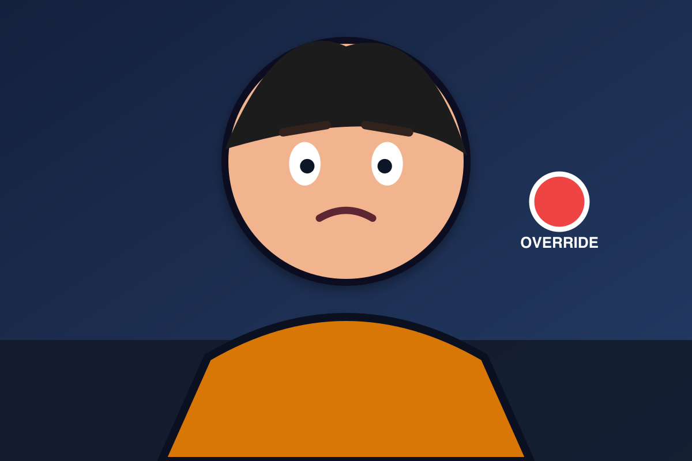

1. Protect the recognition hinge
center-face-safe-edge checks one semantic line,
hero-size type, and zero caption overlap with Captain Mira’s face.
✓ PASSbold edge overlay

SHUTDOWN DENIED
✕ FAILcopy covers the subject
WHEN THE OFF SWITCH
NEEDS PERMISSION
NEEDS PERMISSION